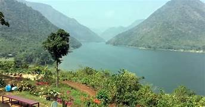
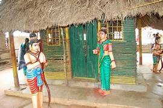

Bhadrachalam Temple (Sri Sita Ramachandra Swamy Temple)

Bhadrachalam Temple, also known as Sri Sita Ramachandra Swamy Temple, is one of the most revered pilgrimage sites in Telangana, located on the banks of the sacred Godavari River in Bhadradri Kothagudem district. The temple is dedicated to Lord Rama and houses a unique self-manifested idol of Rama seated with Sita and Lakshmana. It was built in the 17th century by Bhakta Ramadasu (Kancherla Gopanna), a devout follower of Rama. The temple's architecture reflects the Dravidian style, with beautifully carved pillars, an imposing Rajagopuram, and the iconic gold-plated Vaikuntha Dwaram. The temple is particularly famous for the grand celebration of Sri Rama Navami, when thousands gather for the celestial wedding of Rama and Sita. Other festivals like Vaikuntha Ekadashi and Brahmotsavam are also celebrated with devotion. The temple's serene riverside location, spiritual significance, and rich history make it a must-visit destination for devotees and tourists alike.
Papikonda National Park / Papi Hills (near Bhadrachalam)
Papikonda National Park, set amidst the majestic Papi Hills near Bhadrachalam, is a breathtaking wilderness along the banks of the Godavari River. Spanning over 1,000 square kilometers, the park is known for its dense tropical forests, rich biodiversity, and scenic river landscapes. Home to tigers, leopards, sloth bears, gaurs, spotted deer, and four-horned antelope, it is a paradise for wildlife enthusiasts. Birdwatchers can spot hornbills, river terns, darters, and various migratory birds. The park is also famous for boat cruises through the misty Papi Hills, offering spectacular views of the hills and waterfalls like Savatula Gundam. Trekking, safaris, and camping add to the adventure. The best time to visit is between October and March when the weather is pleasant. A visit to Papikonda National Park promises a memorable blend of nature, wildlife, and serene river scenery, making it a must-see destination.
Parnasala
Parnasala, located about 32 kilometers from Bhadrachalam in Bhadradri Kothagudem district, is a serene village steeped in mythological significance and natural beauty. According to legend, this is where Lord Rama, Sita, and Lakshmana spent part of their 14-year exile. The name "Parnasala" means "leaf hut," referring to the hermitage Rama is believed to have built here. The village is associated with several key episodes from the Ramayana, including the slaying of the demon Maricha (in the guise of a golden deer) and the abduction of Sita by Ravana. Visitors can see symbolic marks said to be from Ravana's chariot and Sita's footprints. A pavilion at the site features life-sized sculptures depicting these legendary events. The location, set on the peaceful banks of the Godavari River, offers a spiritual atmosphere. Accessible by road and boat from Bhadrachalam, Parnasala is a must-visit for devotees and heritage enthusiasts alike.